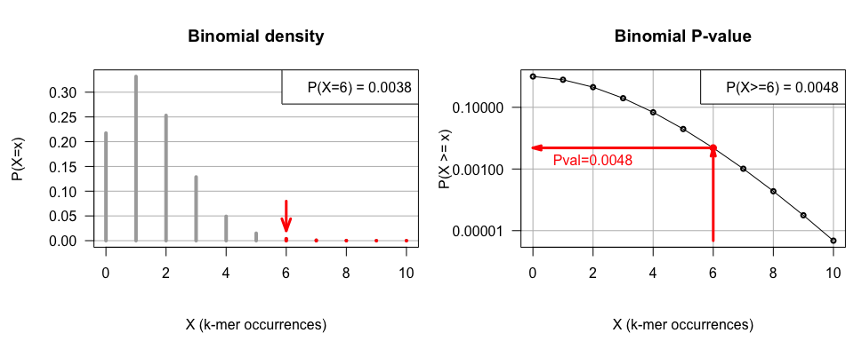

Jacques van Helden
2018-11-22
There are hundreds of published articles arguing about the correct use, misinterpretation and misuse of the P value.
In 2016, the American Statistical Association published an article to address the question of good use and misuse of thresholds on the P value.
“Informally, a p-value is the probability under a specified statistical model that a statistical summary of the data (e.g., the sample mean difference between two compared groups) would be equal to or more extreme than its observed value.”
Source: The ASA’s Statement on p-Values: Context, Process, and Purpose (2016)
“De manière informelle, la probabilité critique (”P valeur“) est la probabilité, étant donné un modèle statistique, qu’une statistique qui décrit les données (par exemple la différence de moyenne entre deux groupes comparés) soit égale ou plus extrême que la valeur observée.”"
Source: The ASA’s Statement on p-Values: Context, Process, and Purpose (2016)
We counted the occurrences of all octanucleotides (\(k = 8\)) in a sequence of \(L = 100,000\) base pairs (single strand counts). The sequence contains \(x = 6\) occurrences of GATTACCA.
Assuming equiprobable and independent nucleotides, is this k-mer over-represented in the sequence?
Prior probability of the k-mer: \(p = 0.25^8 = 0.0000153\)
Number of possible positions: \(N <- L - k + 1 = 100,000- 8+ 1 = 99,993\)
Expected occurrences : \(<X> = N \cdot p = 99,993 \cdot 0.0000153= 1.53\)
We observe 6 occurrences of GATTACCA, whereas we expect 1.53.
Is this level of over-representation significant or is it likely to result from chance?
Under the null hypothesis (would the sequence have been generated according to our background model), what would be the probability to observe at least 6 occurrences?
Probability distribution of k-mer occurrences in a sequence of length \(100,000\) according to a background model of identically and independently distributed nucleotides.
Left: probability mass function (PMF, density), i.e. the probability to observe exactly \(x\) occurrences. Arrow: observed occurrences.
Right panel: probability to observe at least X occurrences of the considered k-mer (note the logarithmic scale on Y). This is the P value of the occurrences.

In our example, the P-value is the probability under the background model (equiprobable and independent nucleotides) that the occurrences of a k-mer (GATTACCA) would be equal to or higher than its observed value (\(x = 6\)).
We obtain the following result:
\[\begin{aligned} P(X \ge x) &= \sum_{i=x}^{n}{C_n^i p^i (1-p)^{n-i}} \\ &= \sum_{i=6}^{100,000}{C_{100,000}^i 0.25^i (1-0.25)^{100,000-i}} \\ &= 0.00483 \end{aligned} \]
Analyse NGS de la régulation par FNR chez Escherichia coli. Haut : Profil de couverture des reads alignés sur le génome de E.coli dans une expérience de ChIP-seq (pourpre), de RNA-seq chez une souche sauvage (gris) et mutante pour FNR (jade). Bas : gènes annotés, pics de ChIP-seq, gènes différentiellement exprimés (RNA-seq).
Lors d’une expérience de ChIP-seq on a aligné \(N = 1.000.000\) lectures sur un génome de \(G = 4.000.000\) paires de bases. On découpe l’entièreté du génome en régions non-chevauchantes de \(w = 200\) pb et on compte le nombre de fragments de lecture par région. Sur une région donnée, on trouve \(x=70\) fragments de lecture. Peut-on considérer que cette région est significativement enrichie ?
\[\begin{align} P(X \ge x) &= \sum_{i=x}^{\infty} \frac{\lambda^i}{i!}e^{-\lambda} = 1 - \sum_{i=0}^{x-1} \frac{\lambda^i}{i!}e^{-\lambda} \\ &= 1 - \sum_{i=0}^{69} \frac{50^i}{i!}e^{-50} = 0.00433 \end{align} \]
| Application | Nombre typique de tests |
|---|---|
| RNA-seq: détection de gènes différentiellement exprimés | 25.000 gènes |
| Détection de pics dans des données de ChIP-seq | 10.000.000 régions |
| Découverte de k-mères sur- ou sous-représentés dans les séquences régulatrices | 4096 6-mères, 16384 7-mères, 65536 8-mères |
| Etude d’association à échelle génomique | 1.000.000 SNPs |
| recherche de similarité de séquences avec BLAST | 1.000.000.000 |
Question: si on admet un seuil de \(5\%\) de faux-positifs sur chaque tests, quel est le nombre de faux-positifs attendus ?
La E-valeur (\(E\), E-value, expectation) est le nombre attendu de faux-positifs lorsqu’on effectue une série de tests avec un seuil donné sur la probabilité critique (\(P\)).
Elle est obtenue en multipliant la probabilité critique (\(P\)) par nombre de tests (\(T\)).
\[E = P \cdot T\]
Nombre de faux-positif attendus pour \(\alpha = 0.05\).
| Application | Nombre typique de tests | E-valeur |
|---|---|---|
| RNA-seq: détection de gènes différentiellement exprimés | 25.000 gènes | 1250 |
| Détection de pics dans des données de ChIP-seq | 10.000.000 régions | 500.000 |
| Découverte de k-mères sur- ou sous-représentés dans les séquences régulatrices | 4096 6-mères, 16384 7-mères, 65536 8-mères | 3276.8 |
| Etude d’association à échelle génomique | 1.000.000 SNPs | 50.000 |
| recherche de similarité de séquences avec BLAST | 1.000.000.000 | 50.000.000 |
Dans un problème de prédiction ou de classification, on peut dresser un tableau de contingence indiquant la correspondance entre le statut réel de chaque test (sous hypothèse nulle \(H_0\) ou alternative \(H_1\)) et le résultat du test (positif ou négatif).
| Statut réel | \(H_0\) | \(H_1\) | |
|---|---|---|---|
| Test | + | \(FP\) | \(TP\) |
| - | \(TN\) | \(FN\) |
\(FP\): False Positive; \(TP\): True Positive; \(TN\): True negative; \(FN\): False Negative.
Comment choisir un seuil pour la P-valeur ?